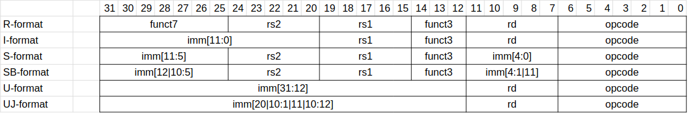

102 - RISC-V
As you know by know, computers speak a different language than us, humans. Also, different computers don’t speak the same language, although some similarities can be detected. Where all our words in the English or Dutch language are nicely summarised in a dictionary. Similarly, the words that a processor speaks are summarised in an instruction set.
When we hear stories, from a certain level of abstraction these stories are simply a collection of words that occur in the dictionary. This concept also translates to a processor in the form of a program. A program is set of instructions put in a specific order to tell a story, or achieve a certain functionality.
To interpret and execute a program, an architecture is needed. Such a computer architecture is a model on how the list of instructions should be executed. A frequently used instruction set architecture (ISA) is the load-store architecture. This technique is used by the PowerPC, a MIPS processor, an ARM core … and the RISC-V. Another famous ISA is the register-memory architecture. This is used by the Intel x86 and the Motorola 68000 series.
The difference between a load-store architecture and a register-memory architecture can be illustrated using an example: add a, b, c. This instruction has the processor calculate the sum of b and c and places the result in a. In a load-store architecture all three locations (a, b, and c) must be residing in a register. In a register-memory architecture these locations can also reside in memory.

In 2011 the University of California, Berkely published the <strong>RISC-V Instruction Set Manual</strong>. The full history of RISC-V can be found on their website. This original specification has undergone quite some change. The most recent version (at the moment of writing) is December 16, 2021 and can be found here. Finally it is pointed out that RISC-V ISA is completely open and freely available to academia and industry 😃.
A word from the instruction set is (for this course) assumed to be 32 bits. Such a 32-bit word can mean anything in the world until a consensus is achieved on how to interpret these words. This is done in the RISC-V ISA and will be shortly (re-)visit below.
Having any idea, like the RISC-V, on paper is an important step. Of course, even the best design on paper is not running any programs. An implementation of the described ideas has to be made. For this course an existing implementation of RISC-V will used: the PicoRV32. This implementation is a hardware description of a RISC-V processor and is optimised for size.
RISC-V instruction formats
The core instructions in RISC-V can be grouped in 6 different formats:
- R-format: these are instructions with 3 register inputs
- I-format: these are instructions with immediates and loads
- S-format: these are store instructions
- SB-format: these are branch instructions
- U-format: these are store instructions wit hupper immediates
- UJ-format: these are jump instructions
Depending on the format of the instruction, it should be interpreted differently. 
RISC-V instruction sub-sets
Although there are many instructions defined in the instruction set, different subsets are made. The base instruction set exists in 3 different sizes: 32, 64 and 128 bits. These are named RV32I,RV64I, and RV128I respectively. In the 64-bit subset, registers are 64 bits wide; and the 128-bit subset increases this even to 128 bits. The need for the latter is debatable (and out of scope here). The base instructions sets all support instructions for basic integer operations. In the I variant there are 32 registers while in the E variant only 16 registers are required.
Different extensions are also proposed.
- M: Instructions for multiplication and division
- C: Compact instructions that have only 16-bit encoding. This extension is very important for applications requiring low memory footprint.
- F: Single-precision floating-point instructions
- D: Double-precision floating-point instructions
- A: Atomic memory instructions
- B: Bit manipulation instructions. The extension contains instructions used for bit manipulations, such as rotations or bit set/clear instructions.
- V: Vector instructions that can be used for HPC.
- P: DSP and packed SIMD instructions needed for embedded DSP processors.
The naming of the instruction sub-set hence defines what should be supported by the architecture and the implementation; for example: an RV64IM, or a RV32IMFB.
From the README-file in the GitHub repository of the PicoRV can be read:
PicoRV32 is a CPU core that implements the RISC-V RV32IMC Instruction Set. It can be configured as RV32E, RV32I, RV32IC, RV32IM, or RV32IMC core, and optionally contains a built-in interrupt controller.
This means that all the configurations are 32-bit implementations that have 32 or 16 registers. Also the required base instruction set is present, and there are options to also enable the multiplication and division instructions; and (as the name suggests) there is an option for having compact instructions.